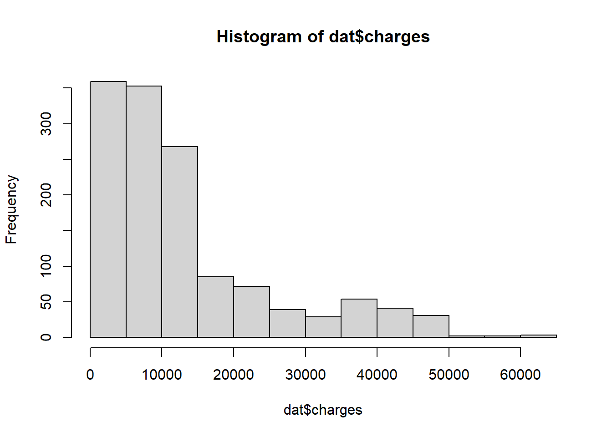
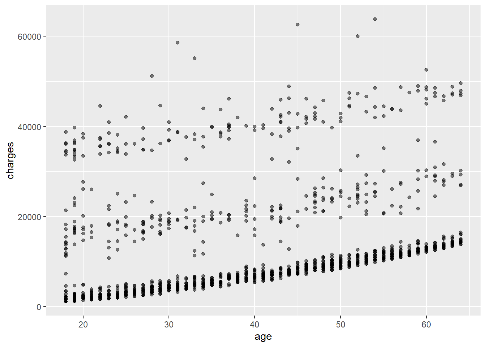
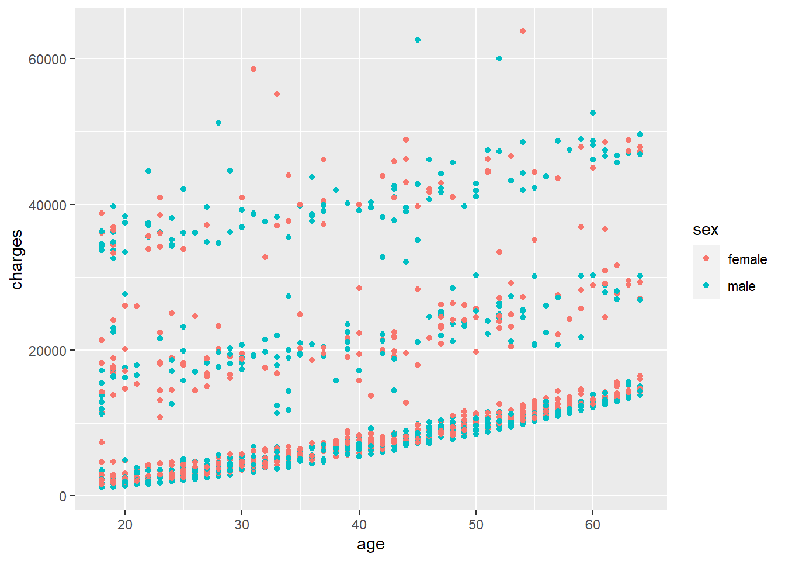
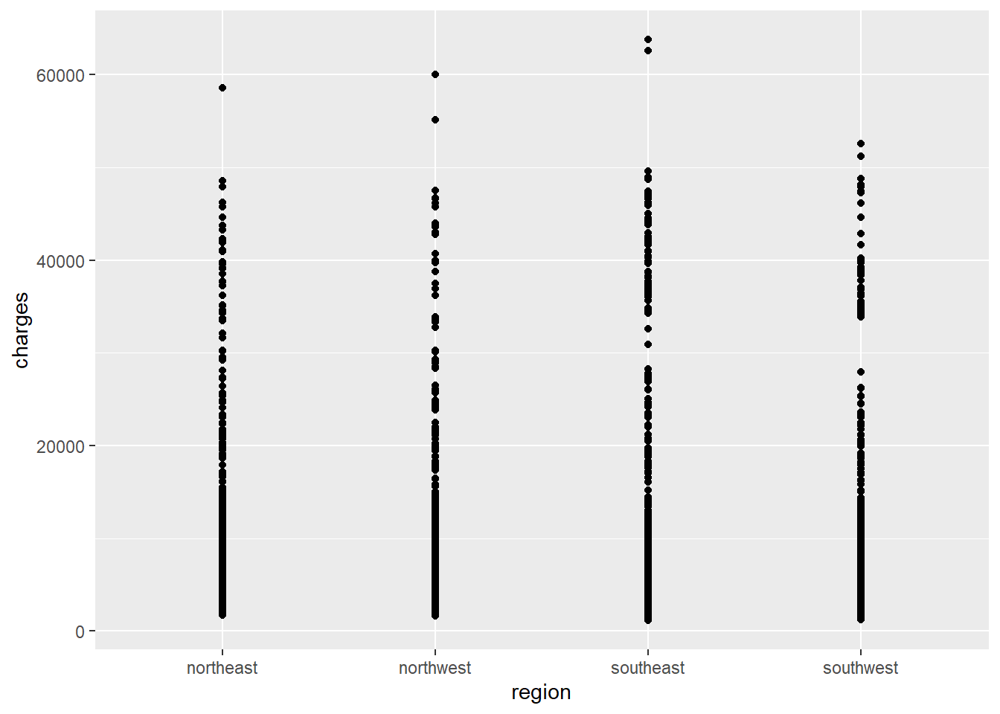
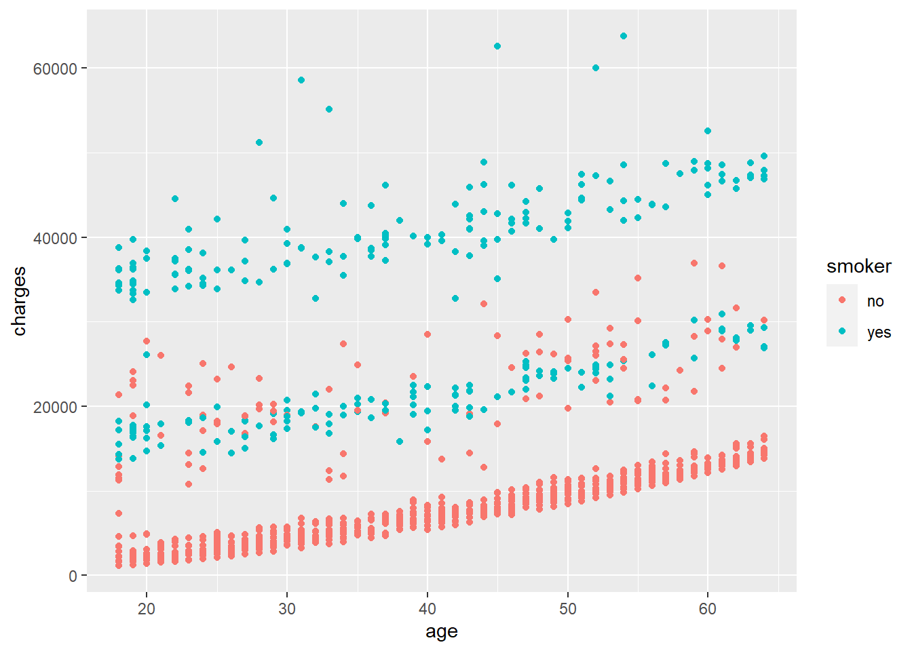
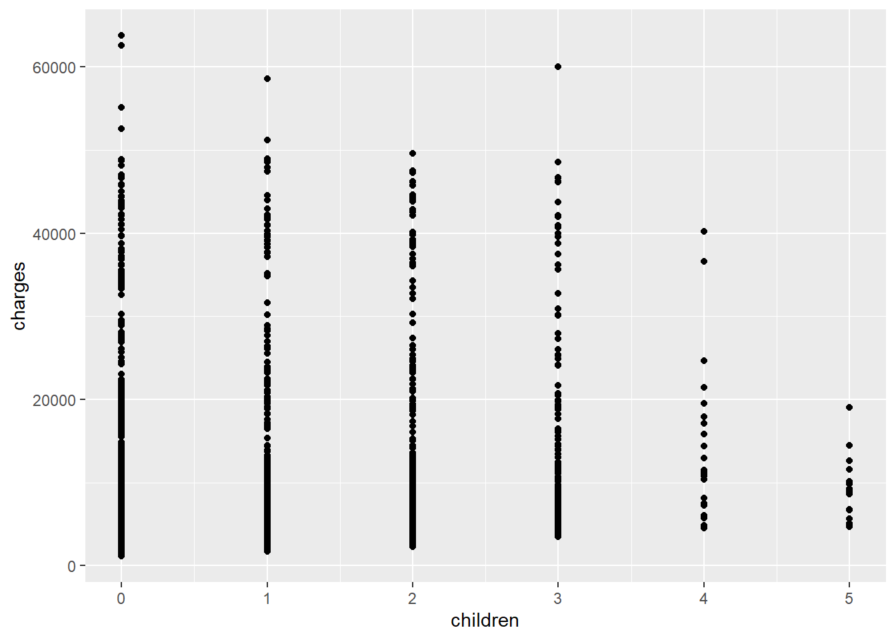
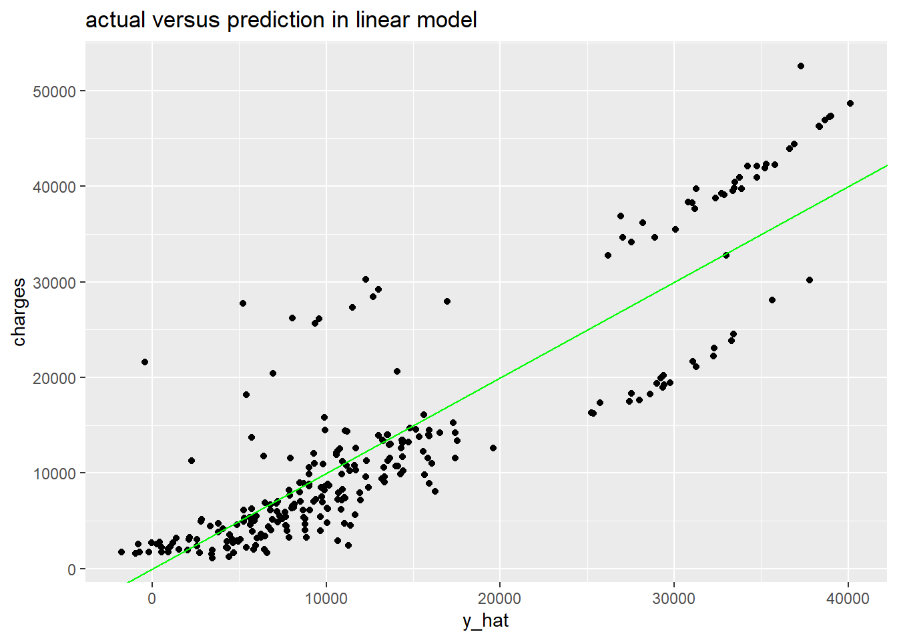
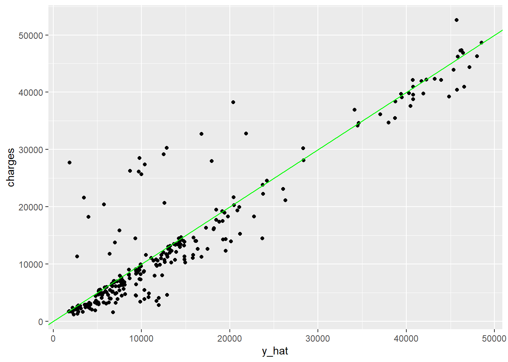

As the pressure of population growth increases, many citizens in developed countries face health-related issues when they get older. In Us, health insurance can pay many medical costs, thus many families would choose to buy medical insurances to prevent tremendous costs if something unexpected happened.
In this condition, it is necessary to predict the health insurance cost based on personal background information, which also benefits insurance companies.
Here we get the dataset from kaggle, with variables age, bmi, gender, children and region. The outcome is the expenses of health insurance with some covariates about personal information.
Firstly is to check the class of each covariates in this dataset. Age and bmi are continuous variables, “sex” “smoke” are binary variables, and “region”“children” are categorical variables. To better predict insurance charges, using continuous variables as the major predictor is appropriate. Thus, We may see if there is a relationship between charges and age or bmi, and determine the main predictor of insurance charges. After that, we may determine which model has good fitness in our data.

From the visualization of the data, charges lower than 15000 dollar have more counts, and ony few people have very high expenses on insurance (over 60000).There is a linear relationship between charges and age, but no obvious patterns between charges and bmi. As the age increases, we can see a trend of increasing charges from the scatterplot. Then, I may consider to apply linear regression as my first method. To improve the fitness of my linear regression model, I will also add other covariates from this dataset in our model to check linear’s least square estimates. Even though I did not see a significant relationship between charges and bmi, it may also be needed in a linear model. Finally I will split the data into training and testing sets to check my linear model’s accuracy. Meanwhile, to get a more detailed prediction of insurance charges, I will also apply machine learning algorithms such as random forest to predict the outcome, and check this algorithm’s performance compared with the linear model.

We generate the training and data dataset to test the performance of our model. In the linear model, adding one covariate age is obviously not enough, and I have to select more variables from our data. From the smoothing line of the ggplot, “Sex”, “region” is independent to insurance charges. In the plot with sex as binary veriable, the dots between male and sex is too close, and it is difficulty to determine gender’s affect on charges. For the covariate region, the distribution of charges in four region categories are even. Finally I will make selections excluding these two covariates from our dataset.

In the plot above, it is obvious that green points with “yes smokers” are throughly above the red points. The binary covariate “smoke”is required for better fitness in our linear model.
The plot above is about the relationship between children and charges. As the number of children one person has increases, the average charge decreases. In the scatter plot, the trend is apparent when the number of children increases from 3 to 5, and all points are below 20000 when a person has 5 children.
However, it is hard to determine whether or not bmi is necessary in the linear, even though people at high bmi show high insurance charges. We will see the RMSE change with or without bmi.
To test the performance of the linear model, I take 10% of data as test sets and 90% as training tests. We will generate the model from the training set.
## # A tibble: 5 × 5
## term estimate std.error statistic p.value
## <chr> <dbl> <dbl> <dbl> <dbl>
## 1 (Intercept) -12753. 1069. -11.9 7.31e- 31
## 2 age 250. 13.5 18.6 6.36e- 67
## 3 children 596. 156. 3.83 1.38e- 4
## 4 smokeryes 23546. 466. 50.6 2.54e-285
## 5 bmi 351. 31.2 11.2 9.14e- 28## [1] "The adj square for model 1 is 0.740516517231389"## # A tibble: 4 × 5
## term estimate std.error statistic p.value
## <chr> <dbl> <dbl> <dbl> <dbl>
## 1 (Intercept) -2688. 618. -4.35 1.48e- 5
## 2 age 267. 14.1 18.9 5.51e- 69
## 3 children 583. 165. 3.54 4.11e- 4
## 4 smokeryes 23525. 492. 47.8 2.66e-267## [1] "The adj square for model 2 is 0.710024388085011"## [1] "The RMSE for model 1 is 5829.74111996821"## [1] "The RMSE for model 2 is 5922.4163776174"## age children smoker bmi
## 1.015554 1.001809 1.000594 1.013276
The tables shown above are fitted values for two linear models. All variables in two tables are statistically significant since their p-values are below 0.05. For the model with bmi, its adj R square is 0.738, RMSE is 5740. For mod2 without bmi, its adj R square is 0.715, and its RMSE is 6154. The standard to choose the best fitted linear model is to choose the model with biggest adjusted r square, or the least RMSE. The results shown above show that the linear model with bmi is better. I also tested linear model either with addition of sex or region, and we don’t see increase of adj R square.
I have set age as the main predictor. We can interpret the linear model as: for one unit increase in age, we expect to see 250 increase in insurance charges, on average, holding all other covariates constant. The intercept of this model is -12753.
For this model, I also test the variance inflation factor to determine whether or not collinearity exists in a linear model, two variables should not have strong correlations. Collinearity will let our model mistakenly report adj R square. The result from VIF shows that all variables in the model show VIF close to one, which means no collinearity exists(these variables are almost independent with each other). Then, I also plot the predicted charges versus actual charges in test sets.
From the plot above, when the charges are below 20000, the prediction is close to actual charges. However, when the charge gets higher, we see many points deviate away from the fitted line. Our prediction can either be too low or too high. Possibly, non-linear effects may exist in our model, or there is effect modification between different terms. It is hard to determine that linear is the best one to predict insurance charges. Therefore, I may take another method to see whether or nor I can improve my fitness or RMSE.
The next method is to apply random forest to predict insurance charges. This algorithm can generate many predictors, each using classification trees to form a final prediction based on the average prediction of all these trees. It has randomness and stability. We will use the same training and test data set to see its performance.
## [1] 4797.725 I set the training control as 6, and take mtry with the least RMSE. All other settings are default. The output from random forest is better than the linear model, and we get RMSE about 4282. The plot shown prediction versus actual value performs much better than the situation in linear model. At higher units of charges, the predicted value and actual value are close. The most dots in this model stick to the abline. Even though a few points at low quantity of charge deviate away from the fitted line, this model’s performance has made a great improvement. These points deviating away from the abline may be outliers, and every model inevitably has certain outliers. Moreover, we don’t see a huge difference of RMSE between linear model and random forest, which means our initial approach is correct. Linear model, compared with this algorithm, is much easier to interpret and understandable to audiences. We can use the interpretation from the linear model to do predictions of charges.
Based on the analysis above, we concluded that bmi, age, smoking, children number contributes to the prediction of insurance charges. The best statistical model is linear regression. In EDA, covariate bmi does not show specific patterns with charges. However, through the calculation of RMSE across several linear models, we found that bmi is required in linear models. The random forest method also shows slightly lower RMSE compared with the linear.
Overall, our prediction by using a linear model is satisfying. Using a linear model can catch most of the predictions in the test dataset. Compared to random forest algorithms, it has low RMSE when the charges are below 20000. Even though we may see certain outlier-like points in linear models when the charges are high. The random forest algorithm is successful since most points between prediction versus actual test value fit the abline.
If I had more time, I would explore the non-linear effects of covariates in our linear model, such as age and bmi. Or, I may explore potential effect modifications or certain combinations of covariates. If those approaches can decrease the RMSE further more, that means our linear model still requires improvement.
library(tidyverse)
dat<-read_csv("https://raw.githubusercontent.com/stedy/Machine-Learning-with-R-datasets/master/insurance.csv")
hist(dat$charges)
dat |>
ggplot(aes(age,charges)) +
geom_point(alpha = 0.5)
dat|>ggplot(aes(age,charges))+geom_point(aes(col=sex))
dat|>ggplot(aes(region,charges))+geom_point()
dat|>ggplot(aes(age,charges))+geom_point(aes(col=smoker))
dat|>ggplot(aes(children,charges))+geom_point()
library(caret)
library(car)
set.seed(2018)
y<-dat$charges
test_index <- createDataPartition(y, times = 1, p = 0.2, list = FALSE)
test_set <- dat[test_index, ]
train_set <- dat[-test_index, ]
lm1<-lm(charges~age+children+smoker+bmi,data=train_set)
lm2<-lm(charges~age+children+smoker,data=train_set)
broom::tidy(lm1)
print(paste("The adj square for model 1 is",summary(lm1)$adj.r.squared))
broom::tidy(lm2)
print(paste("The adj square for model 2 is",summary(lm2)$adj.r.squared))
y_hat<- predict(lm1, test_set)
print(paste("The RMSE for model 1 is",sqrt(mean((y_hat - test_set$charges)^2))))
y_hat1 <- predict(lm2, test_set)
print(paste("The RMSE for model 2 is",sqrt(mean((y_hat1 - test_set$charges)^2))))
vif(lm1)
test_set|> ggplot(aes(x = y_hat, y = charges)) +
geom_point() +
geom_abline(color = "green")+ggtitle("actual versus prediction in linear model")
library(randomForest)
control <- trainControl(method="cv", number = 6)
train_rf <- train(charges ~., method = "rf",trControl = control,data=train_set )
fit_rf <- randomForest(charges ~.,
mtry = train_rf$bestTune$mtry,data=train_set)
y_hat <- predict(fit_rf,test_set)
RMSE(y_hat, test_set$charges)
test_set|> ggplot(aes(x = y_hat, y = charges)) +
geom_point() +
geom_abline(color = "green")
labs = knitr::all_labels()
labs = setdiff(labs, c("setup", "get-labels"))